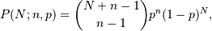
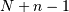
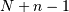

numpy.random.negative_binomial¶
- numpy.random.negative_binomial(n, p, size=None)¶
Draw samples from a negative_binomial distribution.
Samples are drawn from a negative_Binomial distribution with specified parameters, n trials and p probability of success where n is an integer > 0 and p is in the interval [0, 1].
Parameters : n : int
Parameter, > 0.
p : float
Parameter, >= 0 and <=1.
size : int or tuple of ints
Output shape. If the given shape is, e.g., (m, n, k), then m * n * k samples are drawn.
Returns : samples : int or ndarray of ints
Drawn samples.
Notes
The probability density for the Negative Binomial distribution is

where
 is the number of successes,
is the number of successes,  is the probability
of success, and  is the number of trials.
is the probability
of success, and  is the number of trials.The negative binomial distribution gives the probability of n-1 successes and N failures in N+n-1 trials, and success on the (N+n)th trial.
If one throws a die repeatedly until the third time a “1” appears, then the probability distribution of the number of non-“1”s that appear before the third “1” is a negative binomial distribution.
References
[R210] Weisstein, Eric W. “Negative Binomial Distribution.” From MathWorld–A Wolfram Web Resource. http://mathworld.wolfram.com/NegativeBinomialDistribution.html [R211] Wikipedia, “Negative binomial distribution”, http://en.wikipedia.org/wiki/Negative_binomial_distribution Examples
Draw samples from the distribution:
A real world example. A company drills wild-cat oil exploration wells, each with an estimated probability of success of 0.1. What is the probability of having one success for each successive well, that is what is the probability of a single success after drilling 5 wells, after 6 wells, etc.?
>>> s = np.random.negative_binomial(1, 0.1, 100000) >>> for i in range(1, 11): ... probability = sum(s<i) / 100000. ... print i, "wells drilled, probability of one success =", probability